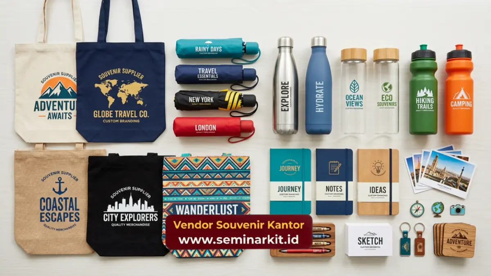

Souvenir supplier adalah penyedia jasa dan produk merchandise korporat yang membantu perusahaan memenuhi kebutuhan cinderamata bisnis secara praktis dan konsisten.
Layanan ini mencakup produksi, custom logo, hingga pengiriman dalam skala besar untuk instansi maupun korporasi.
- Souvenir supplier menyediakan produk merchandise siap custom logo untuk kebutuhan korporat
- Layanan mencakup konsultasi desain, produksi, dan distribusi dalam jumlah besar
- Biaya bervariasi tergantung jenis produk, bahan, dan volume pemesanan
- Kualitas dan ketepatan waktu menjadi faktor utama menilai souvenir supplier
- vendorsouvenirkantor.web.id melayani kebutuhan souvenir supplier untuk berbagai skala perusahaan
Apa Itu Souvenir Supplier dan Mengapa Perusahaan Membutuhkannya?
Souvenir supplier adalah mitra bisnis yang menyediakan produk merchandise berkualitas untuk keperluan korporat, mulai dari acara internal hingga hadiah klien. Perusahaan membutuhkannya untuk menghemat waktu produksi dan menjaga konsistensi branding.
Kebutuhan akan souvenir supplier tumbuh seiring meningkatnya aktivitas korporat seperti seminar, gathering, penghargaan karyawan, dan program loyalitas klien. Alih-alih mengurus produksi merchandise secara mandiri yang memakan waktu dan sumber daya internal, banyak perusahaan lebih memilih bekerja sama dengan supplier yang sudah berpengalaman menangani pesanan dalam volume besar dengan tenggat waktu ketat.
Selain efisiensi, souvenir supplier profesional juga memberikan nilai tambah berupa konsultasi desain, pemilihan bahan yang sesuai anggaran, serta jaminan kualitas produk sebelum dikirim. Hal ini penting terutama bagi instansi pemerintah dan perusahaan besar yang memiliki standar kualitas dan citra brand yang harus dijaga secara konsisten di setiap kesempatan.
Bagaimana Souvenir Supplier Membantu Membangun Citra Brand Korporat?
Souvenir supplier membantu membangun citra brand melalui produk custom logo yang konsisten, berkualitas, dan relevan dengan identitas perusahaan di setiap kesempatan bisnis. Merchandise yang dirancang dengan baik berfungsi sebagai media branding yang bertahan lama.
Setiap kali karyawan atau klien menggunakan produk bermerek perusahaan, secara tidak langsung brand tersebut terus diingat dan dipromosikan. Souvenir yang dirancang secara profesional, dengan logo yang tercetak rapi dan bahan berkualitas, menciptakan kesan positif yang berbeda dibandingkan merchandise generik.
Souvenir supplier yang berpengalaman umumnya memahami prinsip desain korporat, termasuk pemilihan warna sesuai brand guideline, penempatan logo yang proporsional, dan pemilihan material yang mencerminkan nilai perusahaan, misalnya kesan premium untuk hadiah eksekutif atau kesan fungsional untuk merchandise operasional sehari-hari.
Jenis Produk yang Ditawarkan Souvenir Supplier Profesional
Souvenir supplier profesional umumnya menyediakan beragam kategori produk, mulai dari alat tulis kantor, peralatan minum, tas custom, hingga hampers eksklusif untuk kebutuhan korporat dan instansi. Variasi produk ini memungkinkan perusahaan memilih sesuai anggaran dan tujuan acara.
Beberapa kategori produk yang umum ditawarkan meliputi:
- Alat tulis kantor custom seperti notebook, pulpen, dan tumbler
- Tas korporat termasuk totebag, ransel, dan tas laptop
- Merchandise elektronik seperti power bank dan flashdisk custom
- Hampers dan parcel untuk momen khusus seperti akhir tahun
- Plakat dan trophy penghargaan untuk karyawan atau mitra bisnis
Setiap kategori produk memiliki tingkat kustomisasi yang berbeda, mulai dari cetak logo sederhana hingga desain kemasan eksklusif untuk kebutuhan korporat kelas atas.
Untuk penjelasan lebih rinci, Anda bisa membaca panduan tentang Jenis Produk Souvenir Supplier untuk Kebutuhan Korporat.

Berapa Kisaran Biaya Souvenir Supplier untuk Kebutuhan Korporat?
Biaya souvenir supplier umumnya bervariasi tergantung jenis produk, bahan yang digunakan, teknik cetak, dan jumlah pesanan, sehingga estimasi biaya sebaiknya dikonsultasikan langsung sesuai kebutuhan. Semakin besar volume pesanan, biasanya semakin kompetitif harga per unitnya.
Beberapa faktor yang memengaruhi biaya antara lain kompleksitas desain, jenis material seperti kayu, kulit, atau stainless steel, serta teknik personalisasi yang dipilih seperti sablon, bordir, atau ukir laser.
Perusahaan dengan anggaran terbatas dapat memilih produk fungsional dengan biaya lebih efisien, sementara perusahaan yang ingin memberikan kesan eksklusif dapat memilih material premium. Untuk mendapatkan estimasi biaya yang akurat sesuai kebutuhan dan anggaran instansi Anda, tim vendorsouvenirkantor.web.id siap memberikan penawaran dan konsultasi produk secara langsung.
Faktor Apa Saja yang Menentukan Kualitas Souvenir Supplier?
Kualitas souvenir supplier ditentukan oleh konsistensi produk, ketepatan waktu pengiriman, kualitas bahan baku, serta kemampuan menangani revisi desain sebelum produksi massal dilakukan. Faktor-faktor ini penting untuk memastikan hasil akhir sesuai ekspektasi perusahaan.
Supplier yang andal umumnya memiliki proses quality control yang jelas, mulai dari sampel produk sebelum produksi massal hingga pengecekan akhir sebelum pengiriman. Ketepatan waktu juga menjadi indikator penting, terutama untuk acara korporat yang memiliki jadwal ketat seperti seminar tahunan atau acara penghargaan karyawan.
Selain itu, kemampuan berkomunikasi secara responsif dan memberikan solusi saat terjadi kendala produksi turut menjadi penilaian penting bagi perusahaan dalam menentukan mitra souvenir jangka panjang.
Kesalahan Umum Perusahaan saat Memilih Souvenir Supplier
Kesalahan umum yang sering terjadi meliputi tidak memperhitungkan waktu produksi, mengabaikan sampel produk sebelum pemesanan massal, dan hanya berfokus pada harga tanpa mempertimbangkan kualitas bahan. Kesalahan ini dapat berdampak pada citra brand di mata klien atau karyawan.
Banyak perusahaan yang memesan mendekati tanggal acara sehingga tidak memiliki waktu cukup untuk revisi desain apabila terjadi kesalahan cetak. Selain itu, memilih supplier hanya berdasarkan harga termurah tanpa memeriksa kualitas material dapat berisiko menghasilkan produk yang cepat rusak dan justru merugikan citra perusahaan di mata penerima souvenir.
Merencanakan pemesanan jauh sebelum acara, meminta sampel produk, dan berkomunikasi jelas mengenai spesifikasi yang diinginkan adalah langkah yang dapat membantu menghindari kendala tersebut.
Keunggulan Bekerja Sama dengan vendorsouvenirkantor.web.id sebagai Souvenir Supplier
vendorsouvenirkantor.web.id hadir sebagai souvenir supplier yang melayani kebutuhan merchandise korporat dengan proses konsultasi, produksi, hingga pengiriman yang praktis dan terkoordinasi. Layanan ini dirancang khusus untuk memenuhi kebutuhan instansi dan perusahaan berbagai skala.
Kami memahami bahwa setiap perusahaan memiliki kebutuhan dan anggaran yang berbeda, sehingga tim kami siap membantu memberikan rekomendasi produk yang sesuai dengan tujuan acara maupun identitas brand Anda. Dengan pengalaman menangani berbagai jenis merchandise korporat, kami berkomitmen menjaga kualitas produk dan ketepatan waktu pengiriman.
Jika perusahaan Anda sedang mencari souvenir supplier yang dapat diandalkan untuk kebutuhan merchandise korporat, kunjungi vendorsouvenirkantor.web.id dan konsultasikan kebutuhan Anda bersama tim kami sekarang juga.
Souvenir supplier berperan penting dalam mendukung kebutuhan merchandise korporat, mulai dari branding hingga apresiasi karyawan dan klien. Memilih souvenir supplier yang tepat membantu perusahaan menghemat waktu sekaligus menjaga konsistensi kualitas produk.
Konsultasikan kebutuhan souvenir korporat perusahaan Anda bersama vendorsouvenirkantor.web.id untuk mendapatkan produk berkualitas dengan proses pemesanan yang praktis.

Banner promosi: klik gambar untuk langsung terhubung ke WhatsApp tim sales.